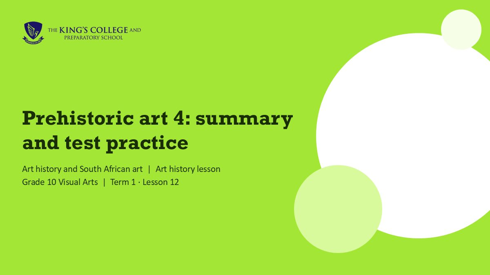

Term 1 · Lesson 12 · Art history lesson
Prehistoric art 4: summary and test practice
Start here
Today I will
- Pull the prehistoric era together on one page
- Use the mark allocation to plan an answer
- Answer and mark a test-style question
Think first
A question is worth 6 marks. How many separate, supported points do you think the marker wants?
Words to know
- Summary
- A short version of a topic that keeps only the most important facts and ideas.
- Key work
- An artwork you must know in detail: artist, title, date, medium, location and why it matters.
- Characteristic
- A visible feature that helps you recognise the style of an era.
- Mark allocation
- The number in brackets after a question, showing how many points it needs.
- Memo
- The marking guide that lists the points a marker looks for.
Slides

Notes
Pulling the era together: themes, key works and terms; how a test question on prehistoric art is marked.
Prehistoric art at a glance
- Context: No writing; hunter-gatherers in the Palaeolithic, first farmers in the Neolithic.
- Key works: Hall of the Bulls (Lascaux), Venus of Willendorf, Stonehenge, Game Pass Shelter eland, the Linton Panel.
- Characteristics: Animals in profile, earth pigments, rock shape used for form, no ground line, linked to belief.
- Focus Themes: Belief systems, materials and media, the body, symbolism.
- Links: Walter Battiss and Pippa Skotnes responded to San art in their own work.
How a test answer is marked
- Read the verb: Describe, explain, discuss or compare: each asks for something different.
- Count the marks: A 6-mark answer needs about six clear points with evidence.
- Name the work: Give the title and facts of the artwork you refer to.
- Point to details: Refer to specific things you can see, using art terms.
- Link back: Finish with a sentence that answers the question directly.
Remember
One mark, one clear point, one piece of evidence.
Practical
You need: History booklet, visual journal
Summary map and test practice
- Make a one-page summary map with five branches: context, key works, characteristics, Focus Themes, links.
- On your own, answer: 'Discuss two theories that explain why prehistoric people painted animals on cave walls. Refer to Lascaux.' (6)
- In your answer, analyse the Hall of the Bulls: describe what you see and use one FET formula sentence.
- Swap with your partner and mark their answer with the memo, ticking each valid point.
- Write one tip for your partner on how to earn one more mark.
Test yourself
- Name three key works of prehistoric art.
- Give two characteristics of prehistoric art.
- What does the 6 in brackets after a question tell you?
Show answers
1. Any three of: Hall of the Bulls (Lascaux), Venus of Willendorf, Stonehenge, Game Pass Shelter eland, the Linton Panel. 2. Any two of: animals in profile, earth pigments, rock shape used for form, no ground line or frame, linked to belief. 3. About six clear, supported points are needed.
Finished early?
Plan a six-mark answer
Practise planning before you write.
- Write this question in your VJ: 'Explain how prehistoric artists used materials and the rock surface to create their images.' (6)
- Plan six points as short notes, each with one piece of evidence from a key work.
- Write the answer in full sentences and name each work you refer to.
- Tick each point you think a marker would accept.